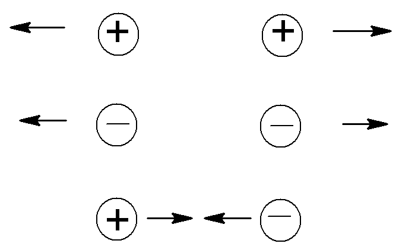
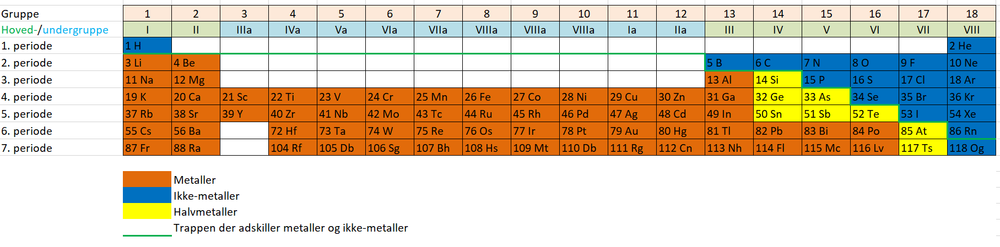
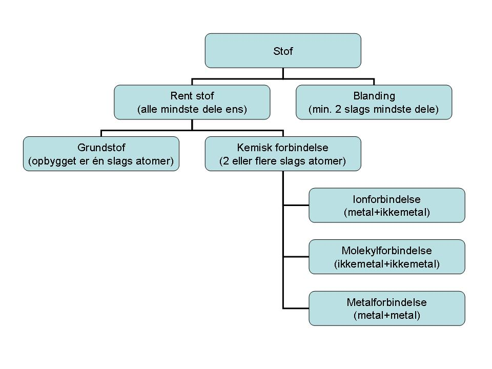

Kapitel 3: Stofs opbygning 1: Atomer, grundstoffer og kemiske forbindelser
1. Formål
Formålet med dette kapitel er:
- at lære om atomers opbygning.
- at lære om det periodiske system.
- at lære om elektronernes fordeling rundt om atomets kerne.
- at lære om forskellen på metaller og ikke-metaller.
- at lære om forskellige typer kemiske forbindelser.
2. Atomets opbygning
Hidtil har vi blot omtalt atomer som meget små partikler som alt stof er opbygget af. Men atomer består af nogle endnu mindre partikler. Faktisk er alle atomer opbygget af tre slags mindre partikler. Et atom har en kerne. Denne er opbygget af to slags partikler, nemlig protoner og neutroner. Udenom kernen befinder der sig en tredje slags partikler, kaldet elektroner. Se figur 3.1.

De tre type partikler (neutroner, protoner og elektroner) har forskellig elektrisk ladning. Elektrisk ladning er en egenskab ved stof. Det viser sig at der er to slags ladning, disse har man valgt at kalde plus og minus. To partikler der har positiv ladning frastøder hinanden, det samme gælder for to partikler med negativ ladning. En partikel med positiv ladning vil derimod tiltrækkes af en partikel med negativ ladning.

Protoner er positivt ladede, elektroner er negativt ladede og neutroner er neutrale (ingen elektrisk ladning). Ladningen af en proton og en elektron har samme størrelse, men med modsat fortegn. Dvs. at en proton og en elektron tilsammen har en ladning på nul.
Antallet af protoner i et atom er forskelligt for de forskellige atomer. Grundstof nr. 1, hydrogen, har 1 proton i kernen, grundstof nr. 2, helium, har 2 protoner i kernen, grundstof nr. 3, lithium, har 3 protoner i kernen, osv.
Antallet af elektroner i et atom er lig med antallet af protoner. Der findes ikke nogen fast regel for hvor mange neutroner der er i et atom, men en grov tommelfingerregel siger, at der er ca. lige så mange neutroner som der er protoner.
Protoner og neutroner er i øvrigt opbygget af nogle endnu mindre partikler der kaldes kvarker, men det er uvæsentligt her.
3. Det periodiske system
Der findes 118 forskellige slags atomer. Grundstoffer er stoffer der er opbygget af én slags atomer, og der findes dermed 118 forskellige grundstoffer. Det periodiske system er en oversigt over alle grundstofferne. Se figur 3.3.

Grundstofferne står i lodrette kolonner der kaldes grupper og vandrette rækker der kaldes perioder.
Grundstofferne er nummereret fra nummer 1 og fremad. Dette nummer kaldes atomnummeret. Atomnummeret er lig med antallet af protoner i atomets kerne og dermed antallet af elektroner udenom kernen.
Der findes 18 grupper i det periodiske system. Disse deler man op i hovedgrupper og sidegrupper (eller undergrupper).
Grupperne kan nummereres efter to systemer. Efter det moderne system, nummereres grupperne blot fra 1 til 18, fra venstre mod højre. Efter det gamle system - der stadig er meget anvendt - nummererer man hovedgrupperne fra I til VIII (altså fra 1-8 med romertal). Hovedgrupperne er grupperne 1-2 og 13-18 (efter den nye nummerering).
Undergrupperne nummererer man også med romertal, men man sætter et a efter romertallet. VIa er således 6. undergruppe, mens VI er 6. hovedgruppe.
Grundstoffer der står i samme gruppe har kemiske egenskaber der ligner hinanden. Fx står både natrium (Na) og kalium (K) i 1. hovedgruppe. Begge er bløde metaller der reagerer kraftigt med vand.
4. Elektronernes fordeling
Elektronerne befinder sig i nogle baner uden om atomets kerne. Disse baner kalder man skaller. Se igen figur 3.1.
Skallerne nummererer man inde fra kernen: 1, 2, 3, osv. Der kan være flere elektroner i hver skal, men der er en grænse for hvor mange der kan være i hver skal.
Der er to vigtige sammenhænge mellem elektronernes fordeling i skallerne og placeringen i det periodiske system.
Regel 1: I hovedgrupperne gælder, at antallet at elektroner i yderste skal er lig med hovedgruppenummeret. Se fx på grundstoffet fluor. Fluoratomet (F) står i 7. hovedgruppe og har 7 elektroner i yderste skal. Da der er 8 hovedgrupper i det periodiske system, kan der maksimalt være 8 elektroner i yderste skal i et atom.
Regel 2: Antallet af skaller med elektroner i, er lig med periodenummeret. Se fx på selen (Se), denne står i 4. periode og har elektroner i 4 skaller.
5. Metaller og ikke-metaller
De 118 grundstoffer kan groft deles op i to slags, nemlig metaller og ikkemetaller.
Metaller er kendetegnede ved, at de har metalglans og at de er gode ledere af varme og elektrisk strøm.
I det periodiske system går der en trappe (se figur 3.3). Grundstofferne til højre for og ovenover trappen er ikkemetaller (bemærk hydrogen der står helt til venstre). Grundstofferne til venstre og under trappen er metaller. De fleste grundstoffer er metaller.
Der er ikke nogen skarp grænse mellem metaller og ikkemetaller. En række grundstoffer der ligger lige omkring trappen kaldes halvmetaller. Det mest kendte halvmetal er silicium.
6. Forskellige typer kemiske forbindelser
En kemisk forbindelse er et stof der er opbygget af to eller flere slags atomer. Når vi har to typer grundstoffer (metaller og ikke-metaller) kan vi danne tre typer kemiske forbindelser, nemlig:
- Forbindelser opbygget af to ikke-metaller. Disse kalder vi for molekyl-forbindelser.
- Forbindelser opbygget af et metal og et ikke-metal. Disse kalder vi for ionforbindelser eller salte.
- Forbindelser mellem to metaller. Disse kalder vi for metalforbindelser.
Da vi ikke omtaler metalforbindelserne nærmere, vil vi normalt tale om to slags kemiske forbindelser, nemlig molekylforbindelser og ionforbindelser.
7. Oversigt over stof
3.4 giver en samlet oversigt over inddelingen af stof.
